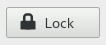

GtkLockButton
GtkLockButton is a widget that can be used in control panels or preference dialogs to allow users to obtain and revoke authorizations needed to operate the controls. The required authorization is represented by a GPermission object. Concrete implementations of GPermission may use PolicyKit or some other authorization framework. To obtain a PolicyKit-based GPermission, use polkit_permission_new.
If the user is not currently allowed to perform the action, but can obtain the permission, the widget looks like this:

and the user can click the button to request the permission. Depending on the platform, this may pop up an authentication dialog or ask the user to authenticate in some other way. Once the user has obtained the permission, the widget changes to this:

and the permission can be dropped again by clicking the button. If the user is not able to obtain the permission at all, the widget looks like this:

If the user has the permission and cannot drop it, the button is hidden.
The text (and tooltips) that are shown in the various cases can be adjusted with the GtkLockButton:text-lock, GtkLockButton:text-unlock, GtkLockButton:tooltip-lock, GtkLockButton:tooltip-unlock and GtkLockButton:tooltip-not-authorized properties.
GtkLockButton
GObject ╰──GInitiallyUnowned ╰──GtkWidget ╰──GtkContainer ╰──GtkBin ╰──GtkButton ╰──GtkLockButton
Constructors
Gtk.LockButton
Gtk.Widget Gtk.LockButton (Gio.Permission)
Creates a new lock button which reflects the permission.
Parameters:
permission
–
a new Gtk.LockButton
Since : 3.2
Methods
The results of the search are